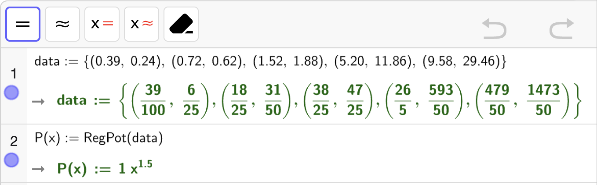
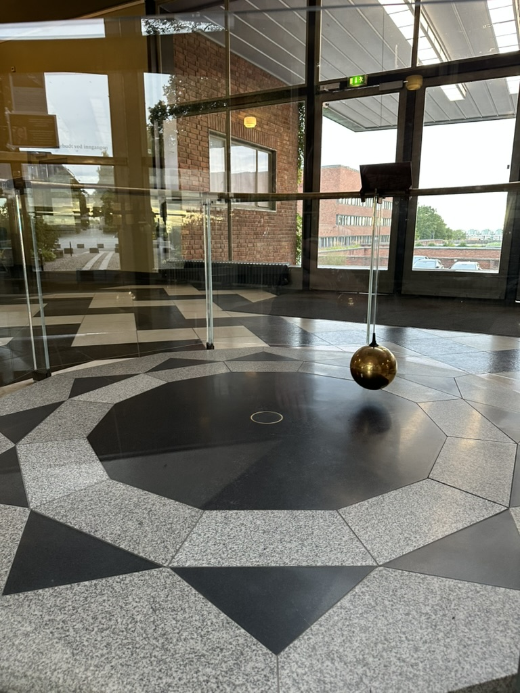

Oppgaver: Potensfunksjoner#
Oppgave 1
I figuren nedenfor vises grafene til potensfunksjonene
Koble sammen riktig funksjon med riktig graf.
Fasit
Graf A tilhører \(f\).
Graf B tilhører \(h\).
Graf C tilhører \(g\).
I figuren nedenfor vises grafene til potensfunksjonene
Koble sammen riktig funksjon med riktig graf.
Fasit
Graf A tilhører \(h\).
Graf B tilhører \(f\).
Graf C tilhører \(g\).
I figuren nedenfor vises grafene til tre funksjoner gitt ved
Koble sammen riktig funksjon med riktig graf.
Fasit
Graf A tilhører \(h\).
Graf B tilhører \(f\).
Graf C tilhører \(g\).
Oppgave 2
En kule med radius \(r\) har et overflatearealet \(A \propto r^2\).
Hvor mange ganger større blir overflatearealet radius dobles?
Fasit
\(4\) ganger større.
En kule med radius \(r\) har et volum \(V \propto r^3\).
Hvor mange ganger større blir volumet dersom radius dobles?
Fasit
\(8\) ganger større.
Forholdet mellom volumet og overflatearealet til en kule er \(\dfrac{V}{A}\).
Hvor mange ganger større blir dette forholdet dersom radius firedobles?
Fasit
\(4\) ganger større.
Oppgave 3
Den elektriske kraften \(F\) mellom to elektriske ladninger oppfyller \(F \propto r^{-2}\) der \(r\) er avstanden mellom de to elektriske ladningene.
Hvor mange ganger svakere blir kraften dersom avstanden mellom ladningene blir tre ganger så stor?
Fasit
\(\dfrac{1}{9}\) svakere.
Tyngdekraften \(G\) mellom to planeter er \(G \propto r^{-2}\) der \(r\) er avstanden mellom de to planetene.
Hvor mange ganger sterkere blir tyngdekraften dersom avstanden mellom de to planetene halveres?
Fasit
\(4\) ganger sterkere.
Bevegelsesenergien \(E\) til en stein med fart \(v\) tilfredsstiller \(E \propto v^2\).
Hvor manger ganger større blir bevegelsesenergien dersom farten blir fire ganger så stor?
Fasit
\(16\) ganger så stor.
Oppgave 4
Perioden til en planet er tiden det tar for planeten å gjennomføre en runde rundt solen.
Nedenfor vises en tabell over periodene til noen av planetene i solsystemet vårt og deres avstand til solen. Avstandene er gitt i astronomiske enheter (AU) der \(1 \text{ AU} = 149.6\) millioner km er avstanden fra jorden til solen.
| Planet | Avstand (AU) | Periode (År) |
|---|---|---|
| Merkur | 0.39 | 0.24 |
| Venus | 0.72 | 0.62 |
| Mars | 1.52 | 1.88 |
| Jupiter | 5.20 | 11.86 |
| Saturn | 9.58 | 29.46 |
Lag en modell på formen
som viser sammenhengen mellom perioden \(P(x)\) i år og avstanden \(x\) i AU.
Løsning
Vi utfører regresjon med en potensmodell:
{kind=link}

Altså er modellen vår
Hva er perioden til jorda, ifølge modellen din?
Løsning
Jorden er en avstand \(x = 1\) AU fra solen. Dermed er perioden til jorden gitt ved \(P(1)\). Vi regner ut og bruker for å få en numerisk verdi:

Altså er \(P(1) \approx 1\) år som stemmer overens med det vi vet om jorden.
Neptun er den planeten som ligger lengst unna solen med en avstand på ca. \(30.1 \, \mathrm{AU}\).
Hvor lang tid bruker Neptun på én runde rundt solen, ifølge modellen din?
Løsning
Siden Neptun ligger \(30.1\) AU fra solen, så er \(x = 30.1\). Perioden er da gitt ved \(P(30.1)\). Vi regner ut og bruker for å få en numerisk verdi:

Altså bruker Neptun ca. 167 år på én runde rundt solen, ifølge modellen vår.
Pluto er en dvergplanet som bruker hele 247.94 år på én runde rundt solen.
Hvor langt unna solen er Pluto, ifølge modellen din?
Johannes Kepler var en astronom som levde rundt år 1600. Han oppdaget en lov som vi i dag kaller for Keplers 3.lov:
For perioden \(P\) og avstanden \(x\) til en planet, så er \(P^2\) proporsjonal med \(x^3\). Det betyr at det finnes en konstant \(k\) slik at \(P^2 = k \cdot x^3\).
Undersøk om modellen din stemmer med Keplers 3.lov.
Oppgave 5
Tiden det tar for en pendel å svinge frem og tilbake én gang kalles for perioden til pendelen.
I tabellen nedenfor vises perioden til en pendel for ulike snorlengder \(\ell\).
| Snorlengde (meter) | 0.1 | 0.3 | 0.5 | 0.8 | 1.0 | 1.3 | 1.6 | 2.0 |
|---|---|---|---|---|---|---|---|---|
| Periode (sekunder) | 0.69 | 1.17 | 1.44 | 1.82 | 2.08 | 2.27 | 2.53 | 2.80 |
Lag en modell \(T\) på formen
der \(T(x)\) er perioden i sekunder for en pendel med en snorlengde på \(x\) meter.
Hva er perioden til en pendel med en snorlengde på \(1.5\) meter, ifølge modellen din?
På Universitetet i Oslo, er en såkalt Foucaults pendel bygget for å demonstrere at jorden roterer. Pendelen sin periode er omtrent på \(7.5\) sekunder. Pendelen er ca. \(20\) cm over bakken på sitt laveste.
Hvor høyt er taket over bakken der pendelen henger?
{kind=link}

Fra fysikken, er perioden \(T\) til en pendel med snorlengde \(L\) omtrentlig gitt ved formelen
der \(g = 9.82 \, \mathrm{m/s^2}\) (meter per sekund per sekund) er tyngdeakselerasjonen i Oslo.
Undersøk om modellen din samsvarer med denne formelen.
Oppgave 6
Når en kule blir sluppet fra forskjellige høyder, vil det ta lenger og lenger tid før kulen treffer bakken.
I tabellen nedenfor vises tiden det tar for en kule å treffe bakken når den slippes fra ulike høyder.
| Høyde (meter) | 0.5 | 1.0 | 1.5 | 2.0 | 2.5 | 3.0 |
|---|---|---|---|---|---|---|
| Tid (sekunder) | 0.32 | 0.47 | 0.58 | 0.63 | 0.72 | 0.82 |
Lag en modell \(T\) på formen
der \(T(x)\) er tiden i sekunder det tar for en kule å treffe bakken når den slippes \(x\) meter over bakken.
Hvor lang tid tar det før en kule treffer bakken dersom den slippes fra \(10\) meter, ifølge modellen?
En kule ble sluppet fra en bro og traff bakken etter \(3\) sekunder.
Hvor høy var broen?
En modell fra fysikken forutsier at tiden \(t\) det tar for en kule å treffe bakken når den slippes fra en høyde \(h\) er gitt ved formelen
der \(g = 9.82 \, \mathrm{m/s^2}\) (meter per sekund per sekund) er tyngdeakselerasjonen i Oslo.
Undersøk om modellen din samsvarer med denne formelen.